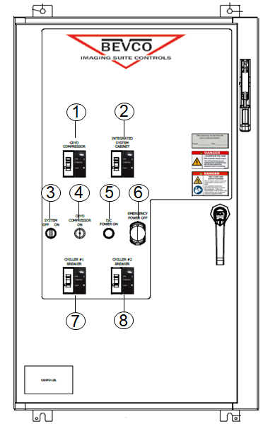

Note If you do not turn off the breakers, the host computer restarts when the power is applied. You must wait for the host computer to boot before you can test the additional Emergency Off buttons.
Press one of the Emergency Off buttons (the location of buttons is determined by the customer).
Verify that power was removed from the PDU by checking the input voltage test points.
On the optional GE Main Disconnect Panel, switch the Integrate System Cabinet Breaker and System Power Switch to the On position.
Note When you press the EMO Reset button, you should hear the contactor engage. This is another indication that the Emergency Stop button was pressed and is active.
Figure 1. Main disconnect panel (MDP)

1
Compressor breaker
2
ISC breaker
3
System power switch
4
Compressor ON LED
5
ISC power ON LED
6
Emergency power off button
7
Chiller #1 breaker
8
Chiller #2 breaker
Repeat the above steps for the other Emergency Off buttons.
Normal locations for the Emergency Off buttons are in the magnet room and in the operator room.